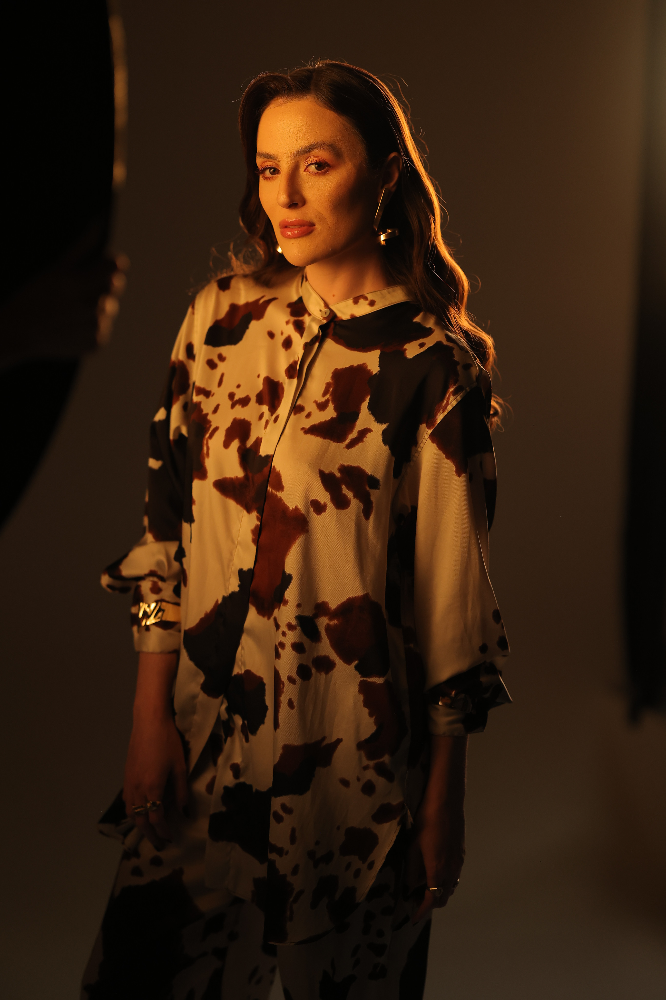
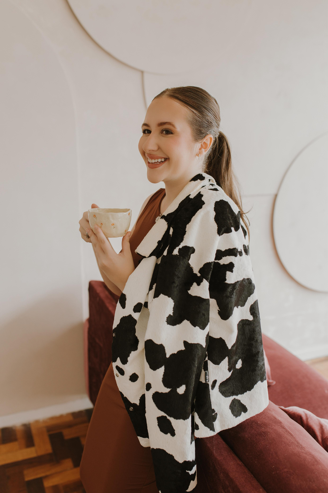
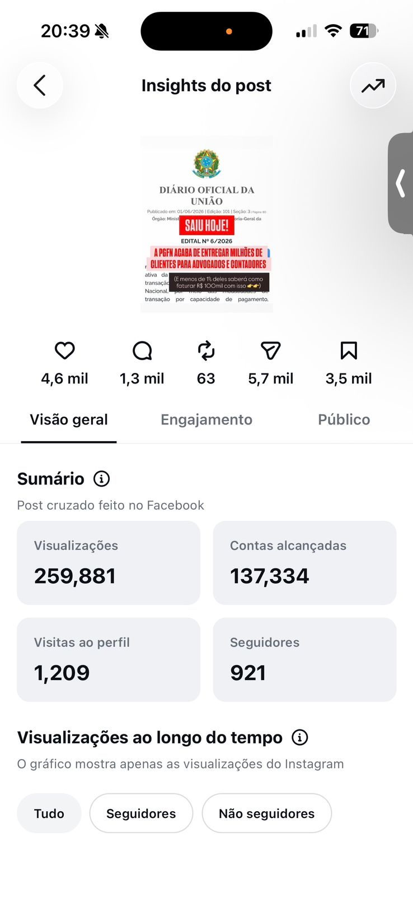
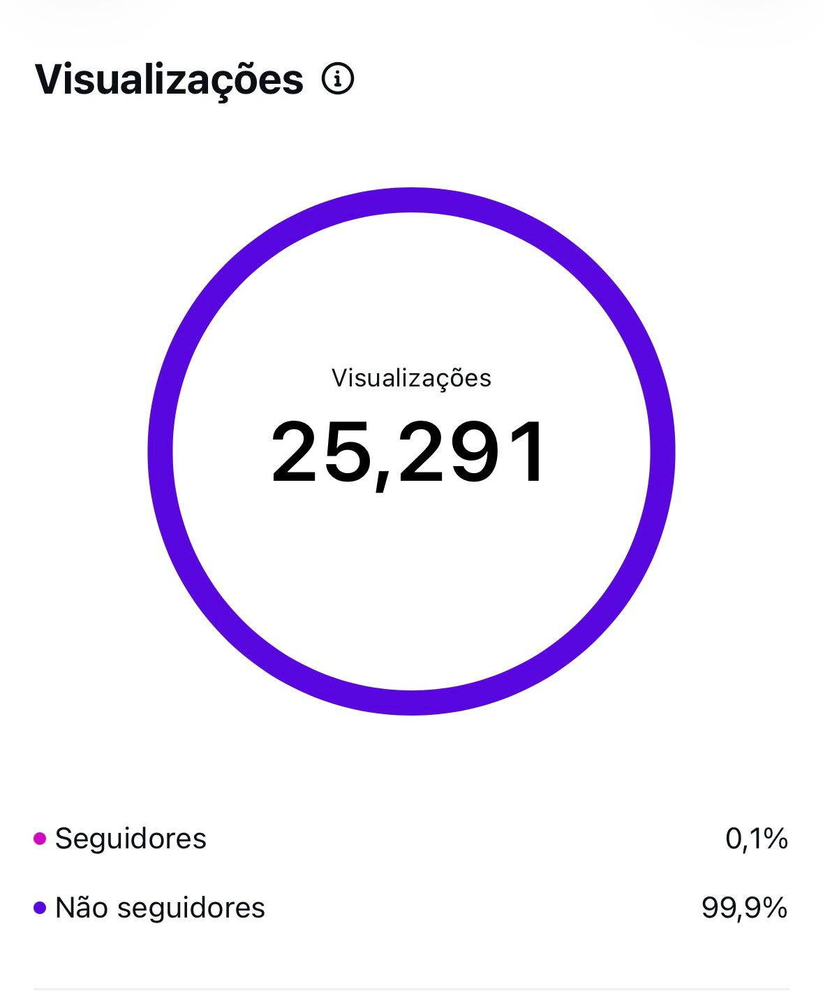
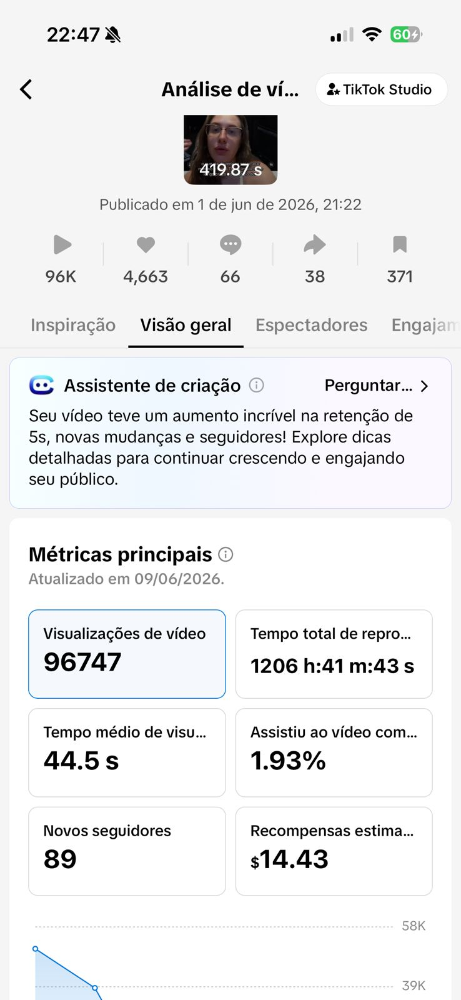

Em 2 dias, você vai mapear ao vivo a sua marca pessoal, configurar o Claude com a sua voz e transformar o seu posicionamento em uma estratégia de conteúdo prática que converte — sem copiar as mesmas experts genéricas que aparecem no seu explorar toda semana.
Quero garantir o segundo loteSalvam, adaptam e postam — mas o resultado nunca chega porque o conteúdo é genérico. Ele poderia ter sido publicado por qualquer outra pessoa do seu nicho…
Preciso te dizer que não te falta ideia, nem consistência!!!!!
O buraco {ou o rombo} é bem mais embaixo: você está criando conteúdo sem uma lógica própria de posicionamento. Aí tanto faz se você usa ChatGPT, Claude ou escreve à mão às duas da manhã, o resultado continua parecendo o conteúdo de alguém tentando acertar o algoritmo, e não construir um negócio com autoridade, previsibilidade e conversão em vendas.
Você vai aprender a usar o Claude como ferramenta estratégica da sua marca pessoal para criar um conteúdo decente {que te faz vender}
Cada dia foi desenhado para te trazer um resultado concreto dentro de uma sequência de evolução. Nós não vamos trazer só conhecimento teórico — você vai entrar no workshop pra meter a mão na massa e já sair com algo extremamente útil em mãos.
Você vai mapear quem você é, e transformar isso em estratégia.
Aqui você para de criar conteúdo baseado no que "performa" pra todo mundo, e começa a criar com base no que faz sentido pra marca que você realmente quer construir.
Você vai aprender a usar o Claude como extensão da sua marca.
No fim, você sai com uma lógica prática, prompts próprios, uma estrutura pronta no notion e clareza para continuar criando sozinha, sem depender de ninguém.
Ou pode finalmente aprender a construir uma estratégia de conteúdo com IA que parece sua.
12x R$7,96
ou R$77,00 à vista
SEGUNDO LOTE
Uma estrategista de posicionamento e uma estrategista de conteúdo se uniram para entregar o que nenhum outro workshop de Claude conseguiu: profundidade estratégica.

Lud Araujo | @aludaraujo
Designer | Consultora de Imagem | Especialista em Branding | Mentora de posicionamento | Fundadora do @studiopropositum
Sou uma Engenheira que direcionou o seu pensamento lógico e sistêmico por uma transição de carreira para o universo criativo. Nos últimos 6 anos já foram mais de 500 imagens pessoais transformadas, mais de 80 marcas criadas e mais de 20 mulheres mentoradas. Eu acredito em extrair e alinhar a sua essência ao seu mercado e aos seus objetivos de longo prazo, para que o resultado seja uma estratégia profunda e longeva que vai te aproximar dos seus sonhos de verdade.

Let Milani | @leticialmilani
Jornalista | Estrategista de Conteúdo | Especialista em Planejamento de Conteúdo baseado em Dados
Sou formada em Jornalismo e especializada em Branding Pessoal e Conteúdo Estratégico. Nos últimos 8 anos, ajudei marcas pessoais a se posicionarem no digital com consistência e com resultados reais. Porque sim, likes não pagam boletos. Meu foco é alinhar sua comunicação com o que você quer alcançar no seu negócio, do feed ao faturamento.
Depois de muito tempo resistindo à IA, aprendi a usar o Claude pra otimizar os meus processos de conteúdo e otimizar o meu tempo e da minha equipe, produzindo conteúdos assertivos e autênticos, e o melhor: com zero cara de IA. É isso que vou te ensinar na prática.
Depoimentos sobre a metodologia e resultados de conteúdos gerados seguindo a metodologia que iremos apresentar no workshop



Ou você pode finalmente aprender a criar conteúdo que parece seu, posiciona sua marca e vende — com uma ferramenta que amplifica quem você já é.
Quero garantir a minha vaga